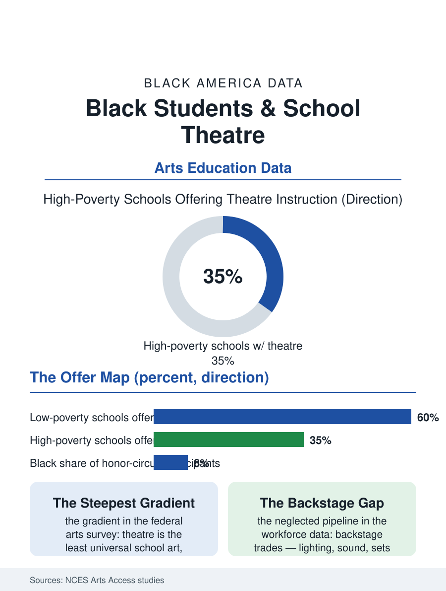

Black Education
Opening Night: Black Students and School Theatre
Theatre is the least universal school art, its availability steepest down the poverty gradient, and its backstage pipeline among entertainment's least diverse. The theatre file.

The school play is the public face of arts education, and its casting sheet is a small census of opportunity. Black students participate in school theatre at rates below their white peers in the federal arts access surveys, in a pattern that begins with which schools offer theatre at all and continues into which students are cast, in which roles, in the repertoire schools choose. This article reads the theatre file, from the middle school musical to the college conservatory pipeline.
Offered, Cast, and Counted
The National Center for Education Statistics' arts access studies supply the baseline: theatre and drama instruction is the least universally offered of the school arts, trailing music and visual art, and its availability drops steeply across the poverty gradient, with high-poverty secondary schools, where Black students concentrate, the least likely to offer a drama program or stage a full production. Where programs exist, the participation research finds Black students active as performers in school musicals, the big-cast gateway production, while the competition and honor circuits, the state thespian festivals and national youth theatre awards, record Black participation well below enrollment share, sorted by the festival fees, travel, and coaching economy familiar from every activities file here. Casting writes the file's most qualitative chapter, but it is not unmeasurable: repertoire analyses by theatre education researchers find school seasons dominated by the canonical musical catalog, whose roles were written for white casts, with color-conscious casting practices varying by district and director; the contemporary repertoire, including works by Black playwrights, appears in school seasons at low but rising rates, and the licensing data show the change is generational, driven by young directors and by students themselves, who constitute a lobby the season-choosing process increasingly hears.
The Pipeline Behind the Footlights
Theatre's stakes exceed the stage because its downstream is the entire storytelling economy of the media file: the actors, directors, designers, and playwrights of stage and screen begin, disproportionately, in school productions, and the professional theatre's demographics, documented in the industry's own visibility reports, show Black performers holding a modest share of roles and a far smaller share of the directing, designing, and producing authority that decides what gets made. The school file's technical theatre chapter is its most neglected: lighting, sound, set, and costume crews train students for the unionized backstage trades, where the workforce data record some of entertainment's thinnest Black representation, behind the very stages whose front-of-house diversity is publicly debated. The community layer partially compensates, as it does throughout this atlas: Black community theatres, church drama ministries, and the historically Black college theatre programs, several with distinguished lineages, run training and production outside the school budget entirely, and their youth programs function as the shadow school system of Black theatre, casting the classics and the canon of Black drama for students whose schools stage one musical a year. The summer economy, theatre camps and intensives, replicates the ballet file's economics without alteration.
What the Stage Teaches
The outcomes research for theatre participation is among the arts file's most consistent: students in school drama show gains in reading comprehension, empathy measures, and school engagement in the studies the arts education field regards as its strongest, with the effects concentrated, as in debate, among the low-income students least likely to be offered the activity. The workforce translation is broader than entertainment: the ensemble production is a project curriculum in disguise, deadlines, budgets, publicity, and one hundred people making one thing on one night, and employers in the career surveys rank its skills, presentation, collaboration, punctuality under pressure, in the top tier of what they cannot find. The file's closing scene is the one the data cannot improve on: the high school auditorium on opening night, in the school that still stages a play, where the cast list on the program is the most honest document the building publishes about whose talents it chose to develop. The theatre file's data argue for more such documents, in more buildings, with repertoires and casting that let Black students play the full range of what a stage can hold, princes and plumbers and presidents, because the alternate curriculum, the one where they watch from the audience of someone else's story, has run quite long enough in the American school.
More in Black Education
Black Educational Attainment: High School Parity, the College Gap
About 89 percent of Black adults hold a high school diploma and one in four holds a bachelor's degree or higher — the attainment ladder, the college completion gap, and the generational trend.
Historically Black Colleges and Universities: Enrollment and Degrees
More than 100 HBCUs enroll roughly 290,000 students and award about one in six Black bachelor's degrees — an outsized share from a small sector. The federal education data.
Black College Enrollment: 2.4 Million Students
About 2.4 million Black students are enrolled in American colleges — nearly two-thirds of them women. The NCES enrollment data by sector, level, and trend.
Source: National Center for Education Statistics, arts education access studies; Educational Theatre Association data; industry visibility reports.